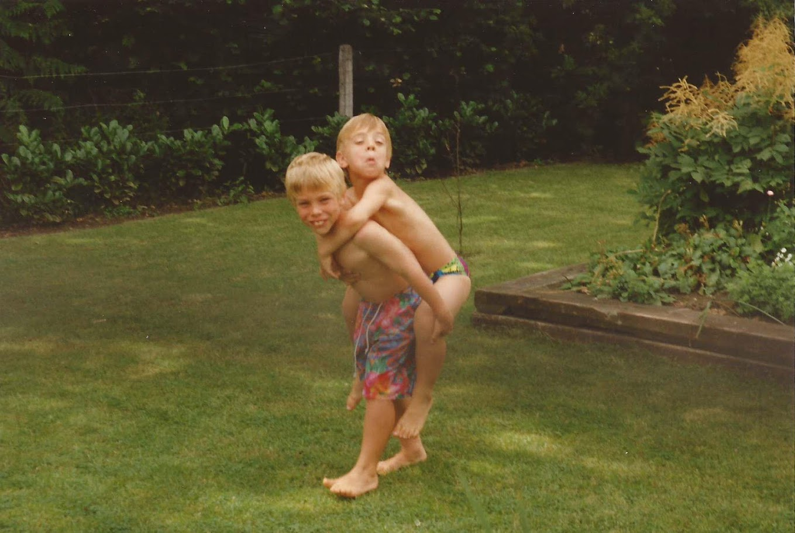

My "Carreer"
In a nutshell

Where it all started (°24/12/1985)

1997-2003: Latin - Mathematics (8h)

2003-2007: Computer Science

2007-2015: ICTRA - Infrabel
Software Developer - Artemis
- Advanced Railway Traffic Environment Management Information System
- Mostly coding and some analysis
- Waterfall...
- ...but in a very agile team
Software Architect - Artemis
- An architect makes decisions that are difficult to revert
- Oversees and safeguards the bigger picture
- Still a lot of coding
- But also mentoring and coaching
Software Architect - UDS to Java Migration
- Technical project
- First introduction to SCRUM
- Thinking about strategies
- And still a lot of coding
Software Architect - ARS
- Automated Route Setting
- Very impacting challenge
- No I am not the source of train delay...
- ...or at least not the only one
- And still a lot of coding
Solution Architect - NewTM
- Spans multiple projects
- Less coding
- A lot of communication and discussions
- Very frustrating experience
- Wasn't my cup of tea
Software Architect - INT
- Infrabel Network Topology
- Again a lot of coding :-)
Expert Software Engineer - Neptune
- QA for maps
- Different way of working
- Inner sourcing - Pull Requests
- User Stories might span multiple software projects
- Developer vs Engineer
Expert Software Engineer - Yellow
- Flux - Workflow Engine
- Started as a secret project
- Multiple POCs
Expert/Principle Software Engineer - Hellbenders
- PRC - Workflow Engine
- As a principle you can think more along about business strategies and decisions
- Senior - Expert - Principle: non-technical difference
What's Next
- I like to work with people
- I like coaching
- ...we'll see
Key Takeaways
- IT is more than coding
- IT is a social job
- IT is team-work
- IT is fun